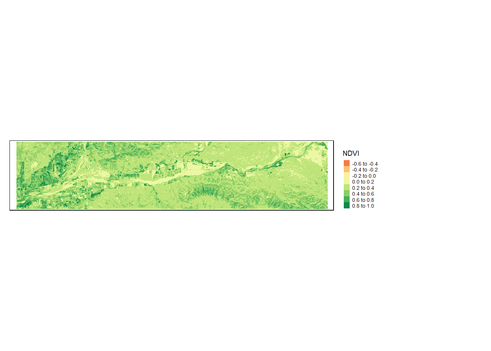
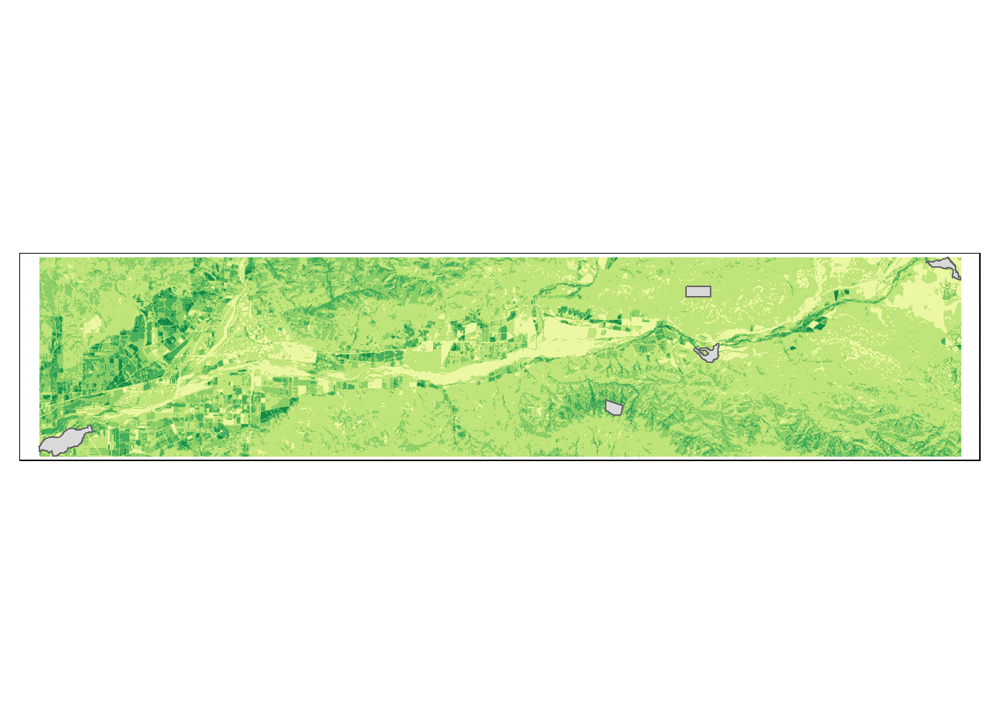

library(terra)
library(sf)
library(tidyverse)
library(here)
library(tmap)Santa Clara River Plant Phenology
About
The following provides code to analyze plant phenology of the riparian forest, grassland, and chaparral shrublands near Santa Clara River, which flows from Santa Clarita to Ventura. One way to do this is to calculate the normalized difference vegetation index (NDVI).
Highlights
- Compare seasonal patterns across the aforementioned vegetation communities
- Calculate NDVI
- Visualize NDVI changes within the riparian, grassland, and chaparral vegetation communities.
The Data
- The data contains multi-spectral remote sensing data from the Landsat’s operational land imager with 8 pre-processed scenes (Level 2 surface reflectance products, Erroneous values set to NA, Scale factor set to 100, Bands 2-7, and Dates in file name) with scenes from the following dates: (2018-06-12, 2018-08-15, 2018-10-18, 2018-11-03, 2019-01-22, 2019-02-23, 2019-04-12, and 2019-07-01).
- Additionally, study_sites are polygons representing the vegetation community sites.
Data citation: NASA. Operational Land Imager (OLI) on Landsat 8. NASA’s Landsat Missions. Retrieved December 5, 2024, from https://landsat.gsfc.nasa.gov/satellites/landsat-8/spacecraft-instruments/operational-land-imager/
Load Packages
Create an NDVI function
NDVI computes the difference in reflectance between the near infrared (NIR) and red bands, normalized by their sum.
# Create an NDVI function
ndvi_fun = function(nir, red){
(nir - red)/(nir + red)
}Compute NDVI for a single scene
# Load in first scene
landsat_20180612 <- rast(here("data", "landsat_20180612.tif"))
# Update names to match spectral bands
names(landsat_20180612) <- c("blue", "green", "red", "NIR", "SWIR1", "SWIR2")
# Apply NDVI function to compute NDVI using lapp()
ndvi_20180612 <- lapp(landsat_20180612[[c(4, 3)]], fun = ndvi_fun)# Plot our NDVI for first scene
tm_shape(ndvi_20180612) +
tm_raster(title = "NDVI") +
tm_layout(legend.outside = TRUE)
Compute NDVI for all scenes
As there are 8 scenes to cycle through, making a function may speed things up and reduce error.
# Clear environment and Re-define NDVI function
rm(list = ls())
ndvi_fun <- function(nir, red){
(nir - red) / (nir + red)
}Now, let’s outline our function. DO NOT RUN the pseudo code below.
# Write pseudo-code. DO NOT RIN
create_ndvi_layer <- function(){
# step 1: read in scene
landsat <- rast(file_name)
# step 2: rename bands in scene
names(landsat) <- c("blue","green", "red", "NIR", "SWIR1", "SWIR2")
# step 3: compute NDVI
ndvi <- lapp(landsat[[c(4,3)]], fun = ndvi_fun)
return(ndvi)
}Now that we have our function skeleton, let’s define what we need to pass into our function.
# List all files in a directory
files <- list.files(
here("data"), pattern = "*.tif",
full.names = TRUE)# Pass function a number that corresponds to the index in the list of file names
create_ndvi_layer <- function(i){
# step 1: read in scene
landsat <- rast(files[i])
# step 2: rename bands in scene
names(landsat) <- c("blue","green", "red", "NIR", "SWIR1", "SWIR2")
# step 3: compute NDVI
ndvi <- lapp(landsat[[c(4,3)]], fun = ndvi_fun)
return(ndvi)
}# Create NDVI layer for each scene, and stack
all_ndvi <- c(create_ndvi_layer(1),
create_ndvi_layer(2),
create_ndvi_layer(3),
create_ndvi_layer(4),
create_ndvi_layer(5),
create_ndvi_layer(6),
create_ndvi_layer(7),
create_ndvi_layer(8))To update our layer names to match the date, we need to isolate the dates
# Isolate just the dates
file_names <- data.frame(file_name = files) %>%
mutate(date = str_sub(file_name, start = -12L, end = -3L))# update layer names to match date
names(all_ndvi) <- c("2018-06-12",
"2018-08-15",
"2018-10-18",
"2018-11-03",
"2019-01-22",
"2019-02-23",
"2019-04-12",
"2019-07-01")# Access to all the names
names(all_ndvi) <- file_names$dateCompare NDVI Across Vegetation Communities
Let’s compare changes in NDVI values across different vegetation communities.
# Read in vegetation communities shapefile
sites <- st_read(here("data","study_sites.shp"))Reading layer `study_sites' from data source
`C:\MEDS\EDS223-dataviz\Final\SC-River_NDVI\data\study_sites.shp'
using driver `ESRI Shapefile'
Simple feature collection with 5 features and 1 field
Geometry type: POLYGON
Dimension: XY
Bounding box: xmin: 314413.3 ymin: 3803180 xmax: 353848.7 ymax: 3811694
Projected CRS: WGS 84 / UTM zone 11N# Vegetation Communities Map
tm_shape(all_ndvi[[1]]) +
tm_raster() +
tm_shape(sites) +
tm_polygons() +
tm_layout(legend.show = FALSE)
Extract NDVI at study sites
# Find the average NDVI within each site
sites_ndvi <- terra::extract(all_ndvi, sites, fun = "mean")
# Bind results to original data set
sites_annotated <- cbind(sites, sites_ndvi)# Clean our data
sites_clean <- sites_annotated %>%
# initial cleaning
st_drop_geometry() %>% # drop geometry
select(-ID) %>% # remove ID generated by terra::extract()
# reformat data frame
pivot_longer(!study_site) %>% # reshape data frame
rename("NDVI" = value) %>% # assign "value" to NDVI
# create date attribute
mutate("year" = str_sub(name, 2, 5), # pull out elements of date
"month" = str_sub(name, 7, 8),
"day" = str_sub(name, -2, -1)) %>%
unite("date", 4:6, sep = "-") %>% # combine date elements
# rename combine study sites by vegetation type
mutate("veg_type" = case_when(study_site == "forest1" ~ "forest",
study_site == "forest2" ~ "forest",
study_site == "forest3" ~ "forest",
study_site == "grassland" ~ "grassland",
study_site == "chaparral" ~ "chaparral")) %>%
# summarize results by vegetation type
group_by(veg_type, date) %>%
summarize("NDVI" = mean(NDVI, na.rm = TRUE))# Plot it
ggplot(sites_clean,
aes(x = date, y = NDVI,
group = veg_type, col = veg_type)) +
scale_color_manual(values = c("#EAAC8B", "#315C2B","#9EA93F")) +
geom_line() +
geom_point() +
theme_minimal() +
labs(x = "", y = "Normalized Difference Vegetation Index (NDVI)", col = "Vegetation type",
title = "Seasonal cycles of vegetation productivity") 
Plot Summary:
In the chaparral vegetation type, NDVI stays relatively constant throughout the year. In the forest vegetation type, the NDVI is lowest in the winter and highest in the summer. In the grassland vegetation type, the NDVI is highest in the winter and lowest in the summer.